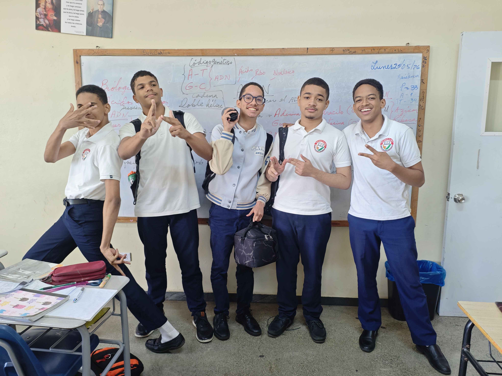

El objetivo de esta página web es tanto comprender qué son los elementos matemáticos plano tridimensional y transformación geométrica, como también la importancia y uso de cada uno en el día a día.
Comprender de manera clara y estructurada los conceptos fundamentales de los elementos geométricos en el plano y en el espacio tridimensional, así como las transformaciones geométricas, y analizar su relevancia práctica y aplicaciones en la vida cotidiana, afin de fomentar una comprensión matemática significativa y funcional.

La corporación P es un grupo de jóvenes iluminados que, en vez de irse a lo fácil, decide enfrentar los desafíos con creatividad y pasión: programar la página web.
Muchas gracias profesora Isaris por brindarnos esta maravillosa oportunidad. No la repita.